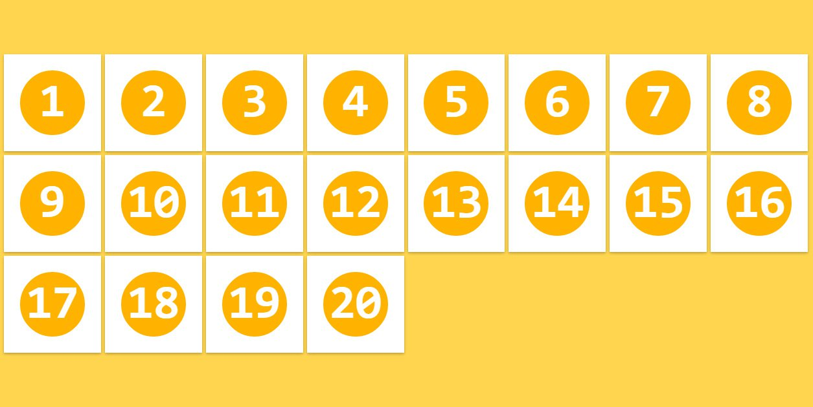

Hola, Flexbox!
Historia del Layout en CSS

Tablas
....
...
...
...
...
Problemas
- Contenido y layout mezclados
- Cero acessibilidad
- Código dificil de leer
Box Model
- Separa estilo del markup
- Muy utilizado hoy en día
.button {
display: block;
float: right;
width: 200px;
height: 20px;
padding: 10px;
border: 1px solid #333;
}
.footer {
position: fixed;
bottom: 0;
margin-top: 10px;
}


Problemas
- Aliñar items verticalmente
- Boxes con la misma altura
Clearfix Hell
.clearfix {
content: "";
display: table;
clear: both;
}
Posicionar items en la misma linea
.inline {
display: inline;
float: right;
display: inline-block;
}
Grids
- Abstracción del box model
- Comenzó co Blueprint
- Creado para poder utilizar columnas

Problemas
- La mayoría no es semántico
- Dependencia de una biblioteca externa
...
...
...
...
...
...
Flexbox
¿Por qué usar Flexbox?
- Layouts modernos no presente
- Directo en css
- Resolve problemas antigos de CSS
¿Cómo usar Flexbox?
Modelo Contenedor/hijo(s):
Layout flex
Componente flex
Propiedades de flexbox:
- flex-direction: layout content horizontally and vertically
- flex-wrap:
- justify-content:
- align-items:
- order:
- flex-basis:
- flex-shrink & flex-grow:
- flex shorthand:
- align-content:
flex-direction
This property specifies how flex items are laid out in the flex container, by setting the direction of the flex container’s main axis. They can be laid out in two main directions, like rows horizontally or like columns vertically.
.flex-container {
flex-direction: row | row-reverse | column | column-reverse;
}
row

row-reverse

column

column-reverse

flex-wrap
The initial flexbox concept is the container to set its items in one single line. The flex-wrap property controls if the flex container lay out its items in single or multiple lines, and the direction the new lines are stacked in.
.flex-container {
flex-wrap: wrap | nowrap | wrap-reverse;
}
wrap

nowrap

wrap-reverse

justify-content
The justify-content property aligns flex items along the main axis of the current line of the flex container. It helps distribute left free space when either all the flex items on a line are inflexible, or are flexible but have reached their maximum size.
.flex-container {
justify-content: flex-start | flex-end | center | space-between | space-around;
}
flex-start

flex-end

center
space-between
space-around

align-items
Flex items can be aligned in the cross axis of the current line of the flex container, similar to justify-content but in the perpendicular direction. This property sets the default alignment for all flex items, including the anonymous ones.
.flex-container {
align-items: stretch | flex-start | flex-end | center | baseline;
}
stretch

flex-start

flex-end

center

baseline

align-content
The align-content property aligns a flex container’s lines within the flex container when there is extra space in the cross-axis, similar to how justify-content aligns individual items within the main-axis.
.flex-container {
align-content: stretch | flex-start | flex-end | center | space-between | space-around;
}
stretch

flex-start

flex-end

center
space-between

space-around

order
The order property controls the order in which children of a flex container appear inside the flex container. By default they are ordered as initially added in the flex container.
.flex-item {
order: -integer-;
}
flex-grow
This property specifies the flex grow factor, which determines how much the flex item will grow relative to the rest of the flex items in the flex container when positive free space is distributed.
.flex-item {
flex-grow: -number-;
}


flex-shrink
The flex-shrink specifies the flex shrink factor, which determines how much the flex item will shrink relative to the rest of the flex items in the flex container when negative free space is distributed.
.flex-item {
flex-shrink: -number-;
}

flex-basis
This property takes the same values as the width and height properties, and specifies the initial main size of the flex item, before free space is distributed according to the flex factors.
.flex-item {
flex-basis: auto | -width-;
}

flex
This property is the shorthand for the flex-grow, flex-shrink and flex-basis properties. Among other values it also can be set to auto (1 1 auto) and none (0 0 auto).
.flex-item {
flex: none | auto | [ flex-grow flex-shrink | flex-basis ];
}
align-self
This align-self property allows the default alignment (or the one specified by align-items) to be overridden for individual flex items. Refer to align-items explanation for flex container to understand the available values.
.flex-item {
align-self: auto | flex-start | flex-end | center | baseline | stretch;
}

Ejemplos de layouts